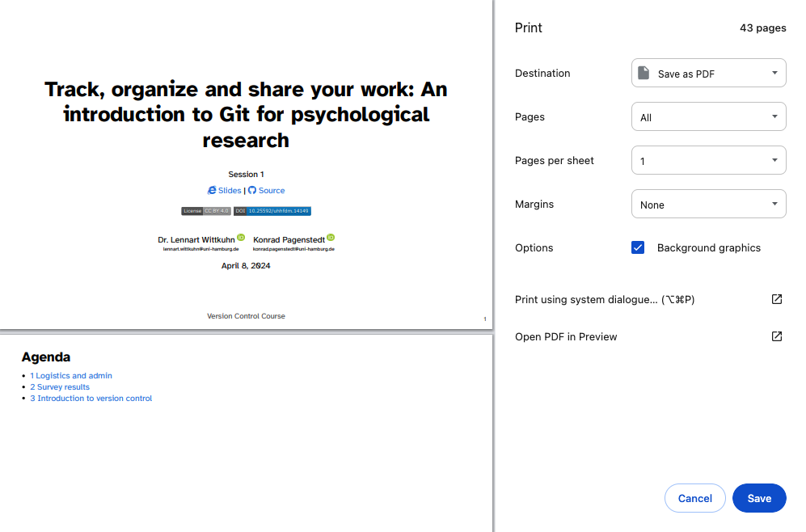

| Command | Description |
|---|---|
git remote |
Manages remote repositories |
git clone |
Creates a local copy of a repository |
git pull |
Fetches and merges the latest changes from a remote repository into the current branch |
git fetch |
Updates remote tracking branches |
git push |
Uploads local commits to a remote repository |
This session
In this session, you will work on the following tasks:
- Reading: Read the chapter “Remotes - Introduction” in the Version Control Book.
- Implementation: Try out the commands in the chapter.
- Exercises: Work on the exercises for the
recipesproject. - Quiz: Test your knowledge with the quiz.
As always:
- Try out the commands of this session and play around with them.
- Check whether you have achieved the learning objectives.
- Ask questions!
- Let’s git started!
Learning objectives
💡 You can connect your local Git to a remote repository service.
💡 You can create a remote repository.
💡 You can pull and push changes to and from a remote repository.
recipes project
At the end of this session, you should have accomplished the following:
- You connected your GitHub account to your local Git.
- You created a new GitHub repository and uploaded (i.e., “pushed”) your
recipesproject. - You collaborated on a shared project by adding and committing changes to a partner’s repository.
- You created and reviewed a pull request to integrate new content from a partner.
Optional:
- You cleaned up your project by deleting unnecessary files and branches.
- You created a short
README.mdfile in your repository.
Please keep the recipes folder! We will continue to use it in the following sessions.
Exercises
1. Upload and manage your repository on MPIB GitLab or GitHub
Connect to MPIB GitLab or GitHub
- Generate a personal access token (PAT) on GitHub.
- Use the PAT for GitHub authentication.
“Push” your repository
- Create an empty internal repository on MPIB GitLab or private repository on GitHub.
- Set the remote URL for your local
recipesGit repository. - Push your
mainbranch to MPIB GitLab or GitHub.
2. “Private” collaboration with pull requests (using “GitHub Flow”)
- Add your partner (desk neighbor) as a collaborator to your
recipesrepository. - Clone your partner’s repository.
- Create a new branch in your partner’s repository.
- Add and commit a recipe to your partner’s
recipes.txtfile. - Push the changes on the new branch to MPIB GitLab / GitHub.
- Create a Merge Request / Pull Request.
- Review and merge the PR your partner made in your repository.
- 🚀 Optional: Add additional changes on the branch pushed by your collaborator.
🚀 Optional: Create a README.md file
- Navigate to your repository on GitHub, click “Add file”, and select “Create new file”.
- Name the file
README.md, add a brief description of your project, and provide a commit message. Play around with Markdown syntax! - Click the green “Commit new file” button to save the
README.mdfile to the repository. - Pull the changes to your local repository.
🚀 Optional: Manage branches
- Push another branch (other than the default branch) with changes to MPIB GitLab or GitHub.
- Delete any unused or merged branches.
🚀 Optional: Clean up your repository on MPIB GitLab or GitHub
- Delete unnecessary files or add a new recipe directly on MPIB GitLab or GitHub.
- Commit changes on MPIB GitLab or GitHub with a message.
- Pull the changes to your local repository.
🚀 Optional: Clone and sync your repo
- Clone your repository from MPIB GitLab or GitHub to a different location on your computer.
- Stage, commit and push changes in the new location (consider using a new branch).
- Pull changes to the repository in the original location.
- Delete your newly cloned repository.
Slides
How can I download the slides as a PDF file?
To print the slides to PDF, do the following:
- Toggle into Print View using the E key (or using the Navigation Menu).
- Open the in-browser print dialog (CTRL/CMD+P).
- Change the Destination setting to Save as PDF.
- Change the Layout to Landscape.
- Change the Margins to None.
- Enable the Background graphics option.
- Click Save.
Note: This feature has been confirmed to work in Google Chrome, Chromium as well as in Firefox.
Here’s what the Chrome print dialog would look like with these settings enabled:

These instructions were copied from the Quarto documentation (MIT License) and slightly modified.